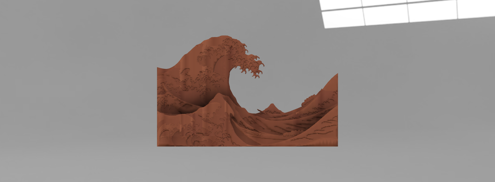
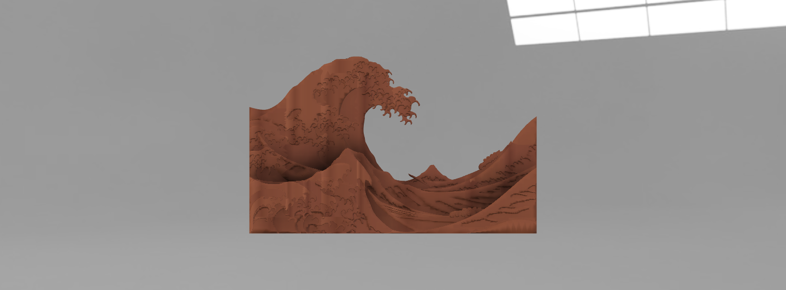

original from Thingiverse

 



This idea was brought up through the cultural aspect of fans in Asian culture. This fan would be made from flower petals to make the air/wind that's produced from the fan smell like flowers.
This idea came from the idea of what if stuffed animals were thought of differently than what we think of as cuddly. The teddy bear would be like a huge statue (idol) that's worshipped by people, and made from a heavier material, making it look blockier than the smaller, cuter versions of it. I guess it could be seen as something that has more value than how we perceive them to be.
In the year 8050, there's an art school that has started to develop all-natural structures from plants through the process of genetically engineering them to create certain things through planting, growing, cutting and grooming, instead of using heavy duty materials. Through this process, the art students are able to grow objects and shape them in different way as they continue to grow. The first experiment was with small objects; the very first being a fan. Different trees and other plants are grafted together to create stronger materials for binding and creating strong materials to enhance society.